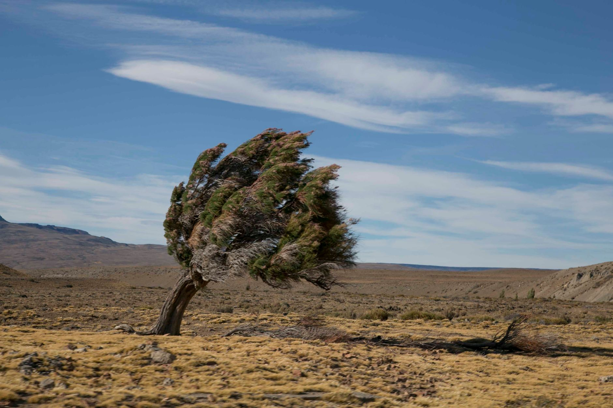

Magíster y especialista
Formación de posgrado en Derecho Penal, Derechos Humanos y Género. La teoría se usa: define la estrategia de cada causa.
Penal · Derechos humanos · Género
Estudio Jurídico Román y Asoc. — defensa penal, querellas por violencia de género y causas de lesa humanidad. Te decimos qué hacer en las primeras horas, en criollo y sin vueltas.
Respondemos personalmente. Lo que nos contás queda entre nosotras: rige el secreto profesional desde la primera palabra.
Formación de posgrado en Derecho Penal, Derechos Humanos y Género. La teoría se usa: define la estrategia de cada causa.
Representación de familias querellantes por los crímenes de las Huelgas Patagónicas de 1921–1922.
Detenciones, medidas de protección y citaciones no esperan al lunes. Escribinos por WhatsApp y te orientamos.
Sumario
Cinco frentes de trabajo. Tocá cada uno para ver qué incluye y escribinos con esa consulta ya cargada.
El plazo corre
Elegí tu situación. Te mostramos qué pasa hora por hora, qué conviene hacer ya y qué es mejor no hacer.
Los tiempos son orientativos y varían según la jurisdicción y el fuero. Esta guía no reemplaza el asesoramiento profesional sobre tu caso concreto.

Memoria, verdad y justicia
Entre 1921 y 1922, cientos de peones rurales en huelga fueron fusilados en Santa Cruz. Durante un siglo esos hechos fueron historia; hoy son también un expediente judicial.
El estudio representa a familias querellantes en las causas por esos crímenes, calificados como delitos de lesa humanidad: imprescriptibles, no amnistiables, no indultables. Trabajo de archivo, reconstrucción de legajos, testimonios de tercera generación y presentaciones judiciales que buscan lo mismo que hace cien años buscaban las familias: que se diga quién dio la orden.
Si sos familiar de una víctima, escribinos →El tiempo no absuelve. Solo hace más difícil probar — y por eso se trabaja con archivo, no con memoria suelta.
Quién te atiende
Abogada · Magíster y especialista en Derecho Penal, Derechos Humanos y Género
No hay call center ni pasamanos: la consulta la toma la profesional que después va a estar en la audiencia. Cada causa se explica en castellano, con los tiempos reales del expediente y sin promesas que no se puedan cumplir.
Cómo seguimos
Contás la situación en dos líneas. Si es una urgencia (detención, medida cautelar, citación), decilo en el primer mensaje: cambia la prioridad.
Presencial o por videollamada. Se revisa lo que haya: denuncia, cédula, causa. Salís sabiendo qué se puede hacer, en qué plazos y cuánto cuesta.
Se define la línea de trabajo por escrito y se te avisa cada movimiento del expediente. Sin tener que llamar para preguntar cómo viene.
Dudas frecuentes
Los honorarios dependen del tipo de causa y de la instancia. Se conversan en la primera consulta y se dejan por escrito antes de empezar: nunca vas a recibir una sorpresa a mitad del proceso.
Sí, y conviene hacerlo hoy. Se puede designar defensor de confianza, averiguar la dependencia y la carátula, y preparar el planteo para la audiencia de control de detención.
El litigio habitual es en CABA y Provincia de Buenos Aires. Las causas de lesa humanidad y las consultas se atienden desde todo el país por videollamada.
Se puede en cualquier etapa del proceso. Se revisa el expediente, se te explica en qué estado está realmente y recién ahí decidís.
Sí. El secreto profesional rige desde la primera consulta, aunque después no contrates al estudio.
Una denuncia sin impulso suele quedar quieta. Se puede pedir el expediente, reclamar las medidas que falten y constituirte como parte para que la causa avance.
Contacto
Un mensaje alcanza para saber si hay algo urgente que hacer hoy. Consulta confidencial, respuesta el mismo día hábil.
Si estás en peligro inmediato: 911. Violencia de género, las 24 h: 144.
Este sitio web se encuentra suspendido por una cuota pendiente de pago. Para reactivarlo de inmediato, comunicate con nosotros y lo dejamos online en minutos.
Regularizar por WhatsApp